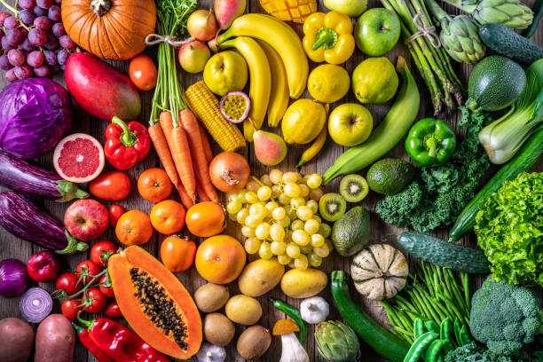

Healthy Food Choices for Cardiovascular Health
Although you might know that eating certain foods can increase your heart disease risk, changing your eating habits is often tough.Whether you have years of unhealthy eating under your belt or you simply want to fine-tune your diet, here are eight heart-healthy diet tips.
Fruits and Vegetables
Packed with vitamins and minerals, fruit can be good for your general health, and many fruits have high levels of nutrients like fiber and polyphenols that benefit your heart. Diets high in fruit have also been linked to a reduced risk of heart attack.
Benefits
- Vegetables such as leafy greens (spinach, collard greens, kale, cabbage), broccoli, and carrots.
- Fruits such as apples, bananas, oranges, pears, grapes, and prunes.
Whole grains
Whole grains high in viscous fiber (oats, barley) decrease serum low-density lipoprotein cholesterol and blood pressure and improve glucose and insulin responses. Grains high in insoluble fiber (wheat) moderately lower glucose and blood pressure but also have a prebiotic effect.
Benefits
- low in saturated fat, but is a source of polyunsaturated fats, including omega-3 linolenic acid.
- high in soluble and insoluble fibre, and resistant starch.
Lean Proteins

A number of studies suggest that replacing high fat meats with more heart-healthy proteins like fish, beans, poultry, nuts, and low fat dairy might help prevent heart disease. The nutrients in these forms of protein can help lower cholesterol and blood pressure and help you maintain a healthy weight.
Benefits
- Lean protein can help lower blood pressure and increase the good cholesterol (LDL cholesterol) in your system
- Adding a few portions of lean protein or swapping a higher fat protein for a low-fat protein can help you avoid high blood pressure and all the risks that come along with it.
Healthy Fats
A number of studies suggest that replacing high fat meats with more heart-healthy proteins like fish, beans, poultry, nuts, and low fat dairy might help prevent heart disease. The nutrients in these forms of protein can help lower cholesterol and blood pressure and help you maintain a healthy weight.
Benefits
- Lean protein can help lower blood pressure and increase the good cholesterol (LDL cholesterol) in your system
- Adding a few portions of lean protein or swapping a higher fat protein for a low-fat protein can help you avoid high blood pressure and all the risks that come along with it.
Reduced sodium and sugar intake

Salt intake of less than 5 grams per day for adults helps to reduce blood pressure and risk of cardiovascular disease, stroke and coronary heart attack. The principal benefit of lowering salt intake is a corresponding reduction in high blood pressure
Benefits
- Too many people eat too much saturated fat, added salt, added sugars and alcohol. Even reducing these by small amounts can make us healthier.
- It can help us manage our weight better and reduce our risk of chronic diseases like heart disease, stroke, Type 2 diabetes, some cancers and chronic kidney disease.